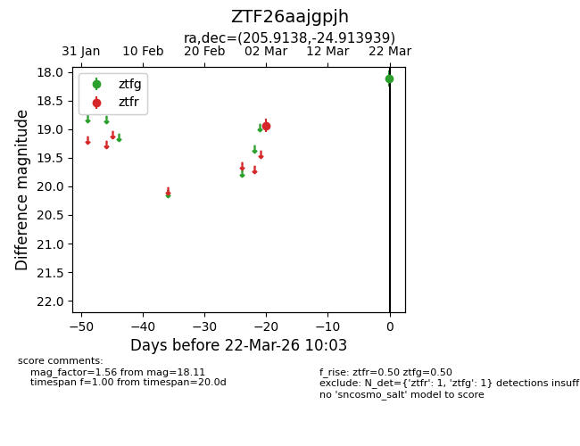
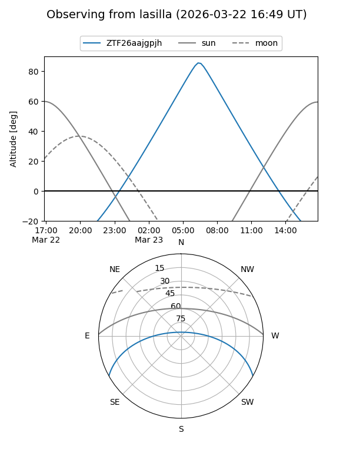
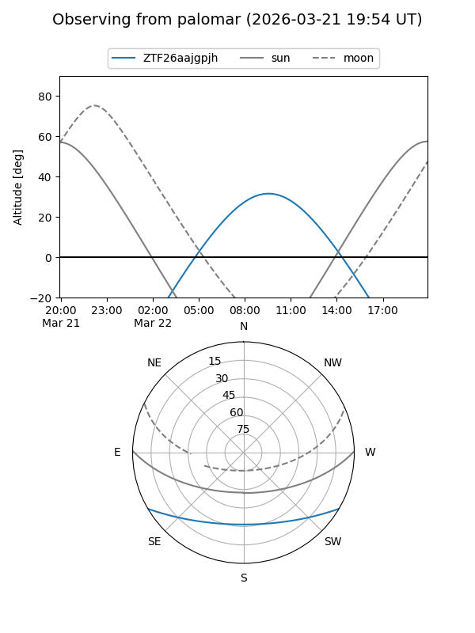

ZTF26aajgpjh
Target ZTF26aajgpjh at 2026-03-22 10:05
Aliases and brokers:
FINK: link
Lasair: link
ALeRCE: link
alt names
ZTF26aajgpjh (ztf,fink_ztf)
Coordinates:
equatorial (ra, dec) = 205.9138,-24.91394
equatorial (HMS+DMS) = 13:43:39.32,-24:54:50.18
galactic (l, b) = (317.6877,+36.45710)
Flags:
Photometry:
last ztfg=18.11, ztfr=18.94
1 ztfg, 1 ztfr detections
Lightcurve

Visibility


Additional plots